P37 实际父子组件 · 问题核对
旧UI实际运行样例，不是新C稿；四类问题尚未修复，整页验收不通过。截图不含地址栏，URL与字段差异见证据。
完整证据
initial-loading · 390px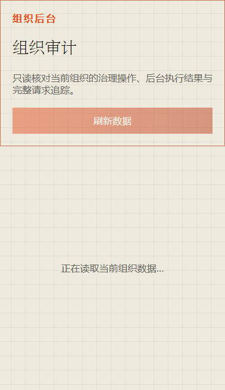
first-500 · 390px first-403 · 390px
first-401 · 390px
first-403 · 390px
first-401 · 390px first-409 · 390px
first-409 · 390px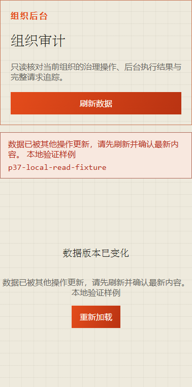
first-429 · 390px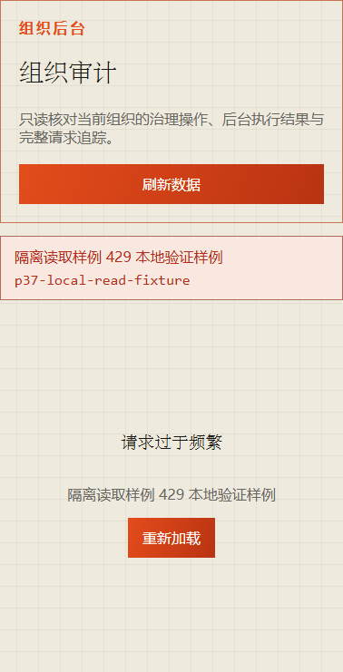
first-503 · 390px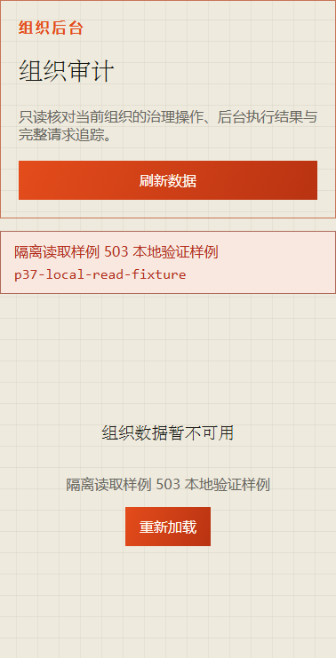
empty-response · 390px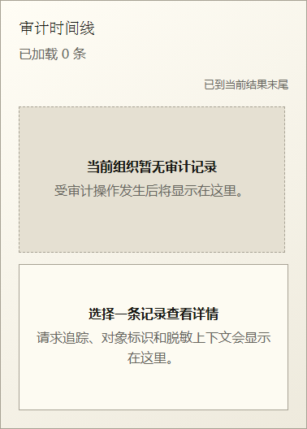
background-500 · 390px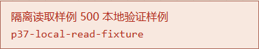
background-403 · 390px background-401 · 390px
background-401 · 390px history-url-fields-mismatch · 390px
history-url-fields-mismatch · 390px late-page-appended · 390px
late-page-appended · 390px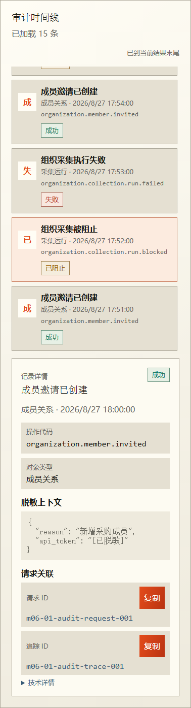
late-copy-wrong-record · 390px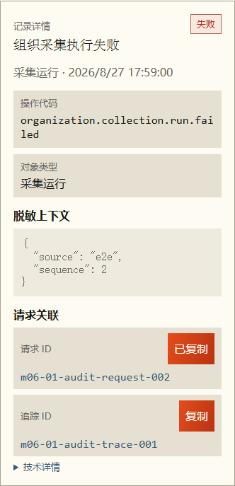
initial-loading · 1440px first-500 · 1440px
first-500 · 1440px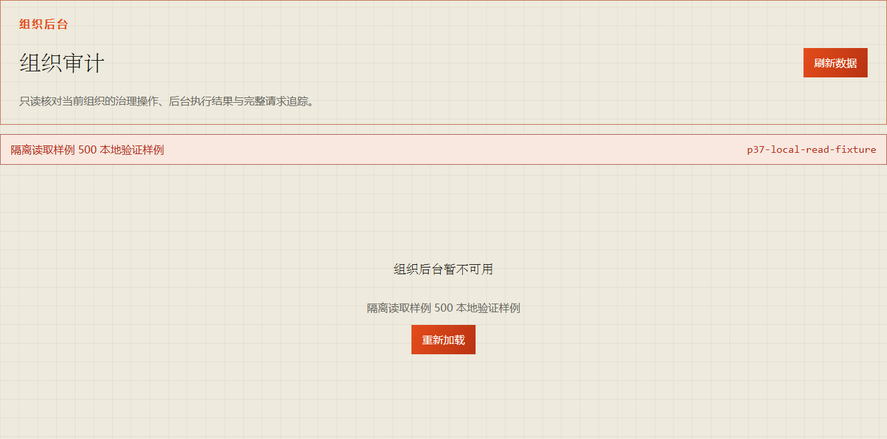
first-403 · 1440px first-401 · 1440px
first-401 · 1440px first-409 · 1440px
first-409 · 1440px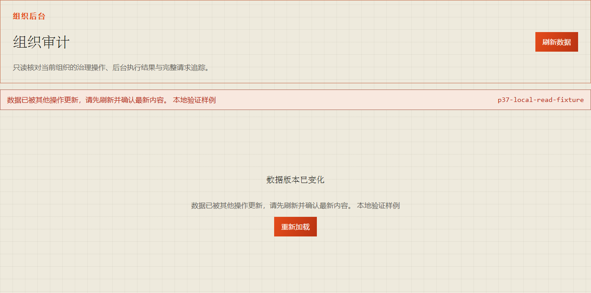
first-429 · 1440px
first-503 · 1440px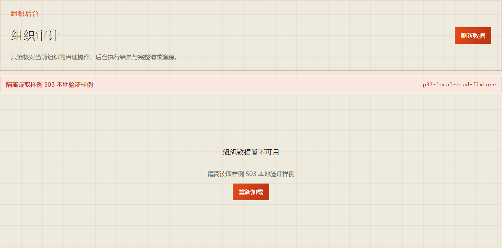
empty-response · 1440px background-500 · 1440px
background-403 · 1440px
background-500 · 1440px
background-403 · 1440px background-401 · 1440px
background-401 · 1440px history-url-fields-mismatch · 1440px
late-page-appended · 1440px
history-url-fields-mismatch · 1440px
late-page-appended · 1440px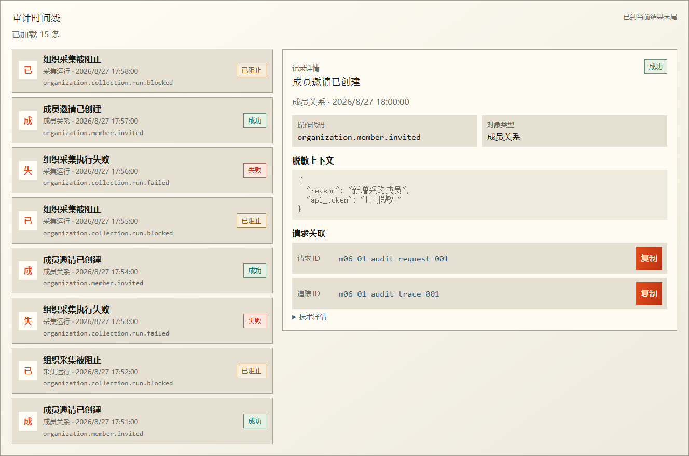
late-copy-wrong-record · 1440px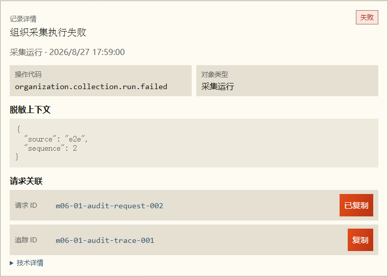